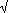
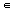
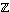
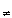

It is easy to verify the subring criterion.
The determinant of the given matrix is a2 - 2b2 and since 2 is irrational this is never 0 if either a, b  - {0}.
Taking x = a/b in a field p , all the non-zero matrices of the given form will have inverses if x2 2 in p . It is easy to verify this for p = 3, 5, 11, 13, 19, 29, 37, ... but not for p = 7, 17, 23, 31, 41, ...
If you choose k to be an integer which does not have a square root modulo p (about half the integers don't) then one can get a field out of this process.